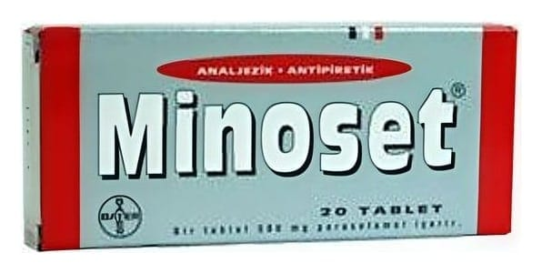

Minoset 500 mg Tablet, 20 Adet

Ne için kullanılır
KT · Bölüm 1• Her tablet, etkin madde olarak 500 mg parasetamol içeren bir ağrı kesici-ateş düşürücüdür. • MİNOSET 20 tabletlik ambalajlarda bulunur. • Hafif ve orta şiddette ağrılar ile ateşin semptomatik (hastalığı tedavi edici değil, belirtileri giderici) tedavisinde kullanılır.